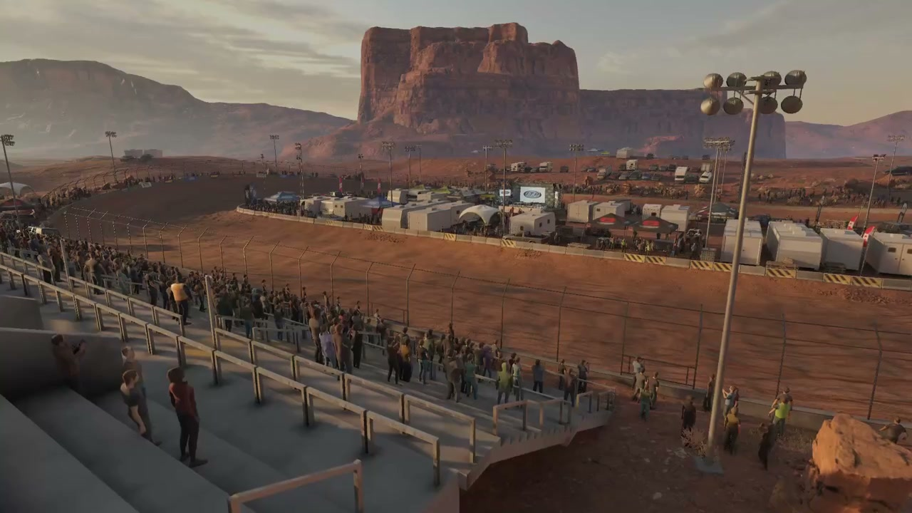
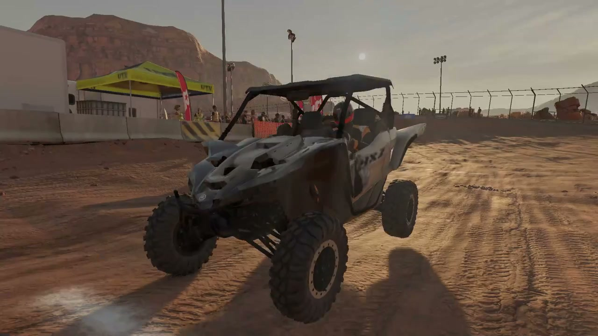
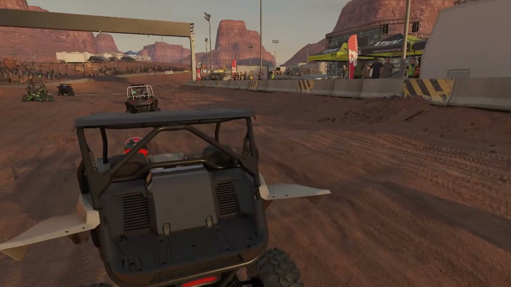
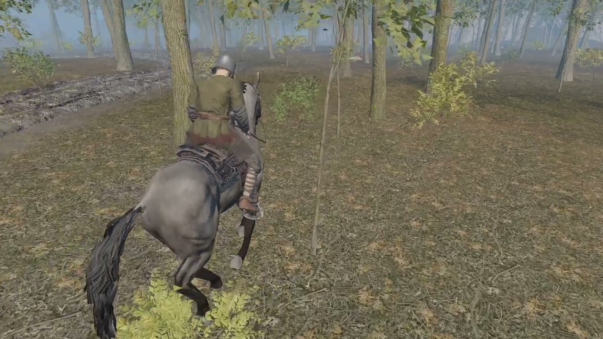
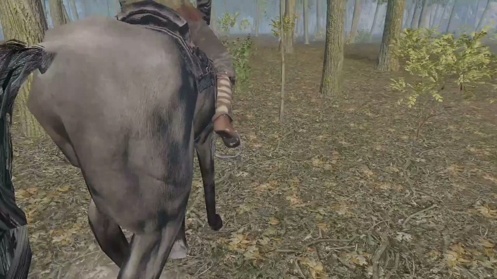
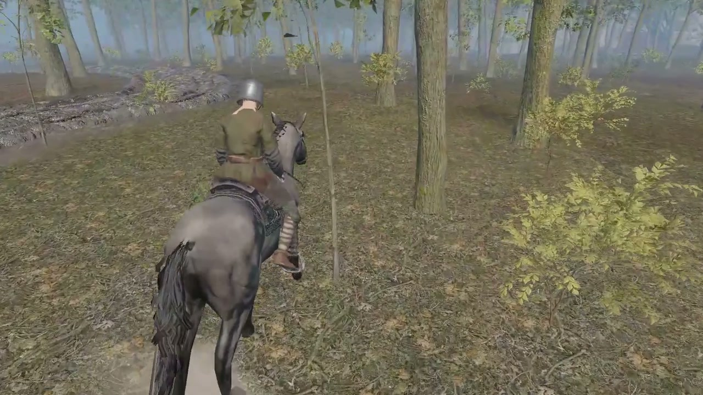
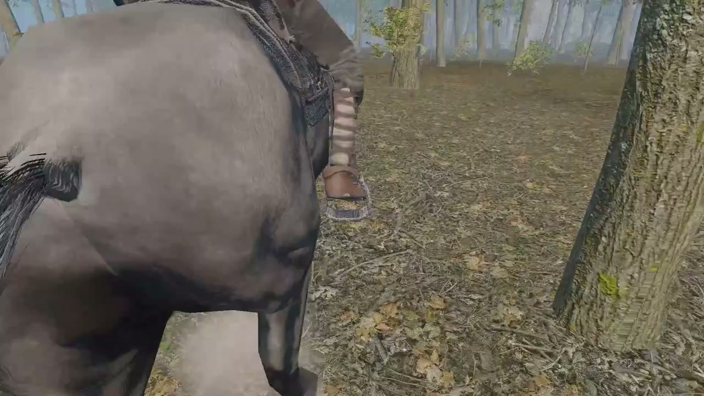
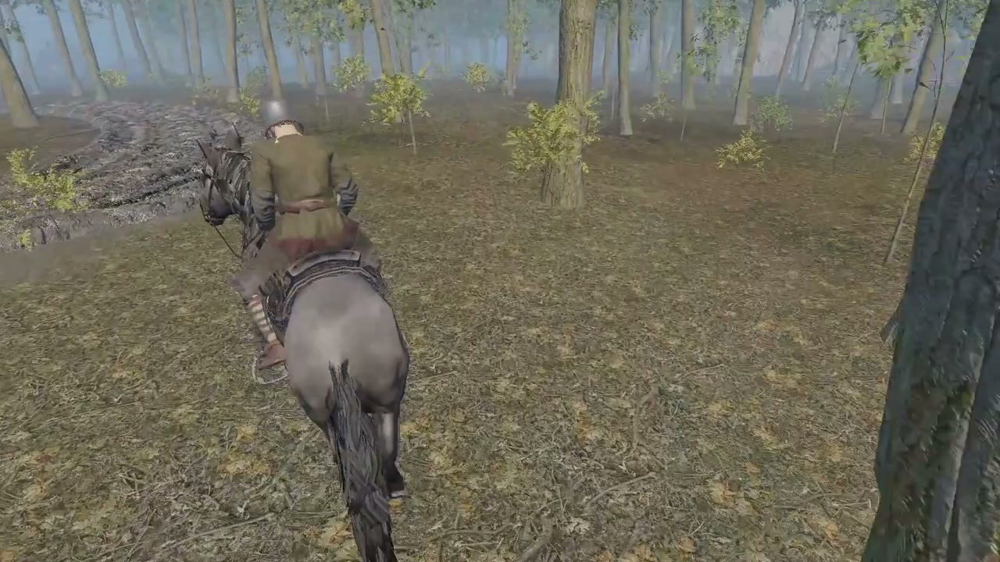

2026-11-24 · 人工已完成R01—R25，按用户确认的盲标口径；对照冻结Rubric 2.3.0机器结果。
11题不一致，其中机器相对人工偏高7题、偏低4题；10题相差一档，R21相差两档。
| 人工档位 ↓ / 机器档位 → | 高 | 中 | 低 | 合计 |
|---|---|---|---|---|
| 高 | 5 | 3 | 0 | 8 |
| 中 | 5 | 8 | 1 | 14 |
| 低 | 1 | 1 | 1 | 3 |
机器判高的13题中，5题与人工高一致（38.5%）；人工8题高档中，机器识别出5题（62.5%）。人工14题中档中，机器一致8题（57.1%）；人工3题低档中，机器一致1题（33.3%）。样本较小，特别是低档只有3题，不推算整体性能。
| 题号 | 人工档位 | 机器档位 | 人工批注 |
|---|---|---|---|
| R05 | 高 | 中 | 开头远景构图，建立辽阔的空间感，然后切到卡丁车，带出主体，表示要在这个场景下进行卡丁车比赛，这个构图的顺序能表意，推进叙事，所以给高。 |
| R07 | 高 | 中 | 无基础问题，两侧道路构成持续视线引导，上中下景划分合理，地平线位于画面上三分之一，增加画面广度与辽阔感。 |
| R09 | 低 | 中 | 第一视角，一些画面贴紧木屋，存在很多无意义构图画面，如何13-14s，18-20s |
| R14 | 中 | 高 | 15s左右存在短暂的视线引导，但主要的片段比较无功无过 |
| R16 | 中 | 低 | 基础没什么问题，视频质量有点崩。 |
| R17 | 中 | 高 | |
| R18 | 中 | 高 | 基础没问题 |
| R19 | 中 | 高 | 基础没啥问题，也不好看。 |
| R20 | 中 | 高 | 基础没啥问题，噼里啪啦的。 |
| R21 | 低 | 高 | 开头的持续仰拍非常无意义，没有带来新的画面信息，整个画面单调，只有人、天空、竹竿。 |
| R23 | 高 | 中 | 构图非常丰富，10s的时候大俯拍、7s的时候大仰拍，带出人物的动作， |
机器把全景的空间揭示作用判得过宽，将主体普通移动带来的画面信息增加当作构图加分项。
高档规则对空间揭示的作用约束过松，没有限制普通移动的情况。
正向参照：R05。开头的大远景构图揭示了卡丁车比赛的场景，建立环境后再带出主体，应作为空间揭示的加分案例。



机器对短暂裁切导致的画面不好看判得过严。
抽帧可能捕获动作中的过渡状态，个别画面的构图不好看被扩大为整段构图问题。若不是连续、大量出现，不应仅据此判低。




